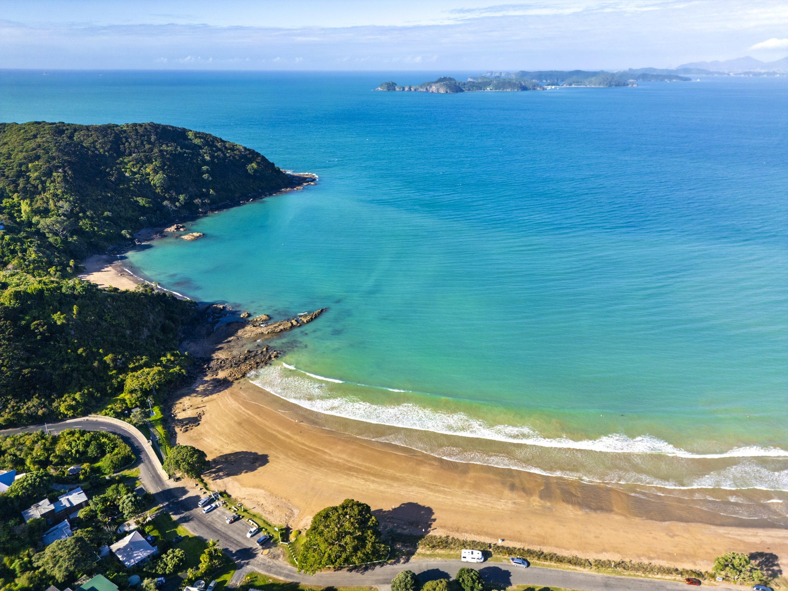
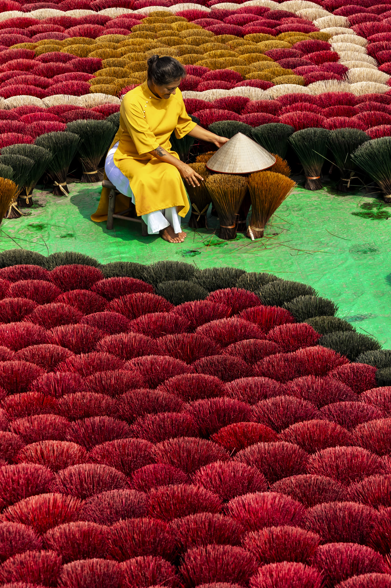
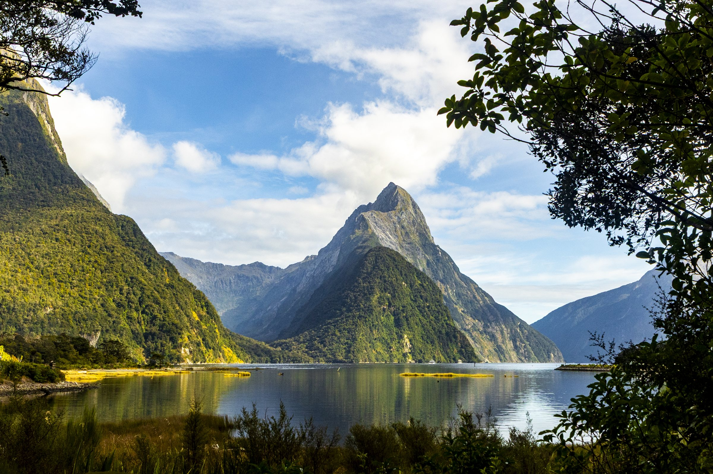
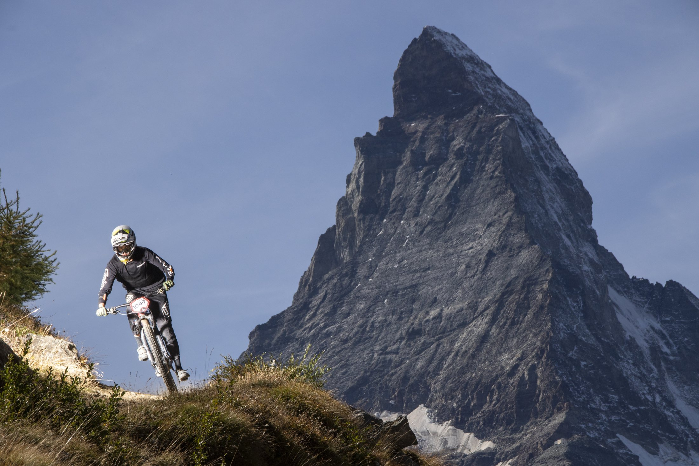
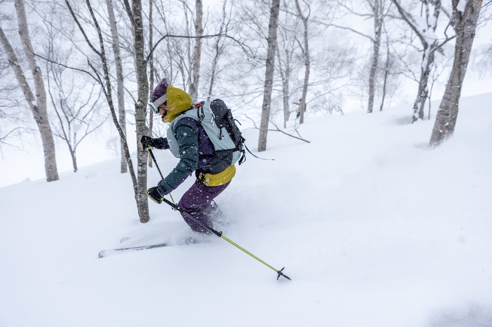

Vuestras campañas,
nuevas imágenes.
Fotografía y vídeo originales para que vuestro equipo o agencia los incorpore a sus campañas, web y comunicación comercial.

FOTOGRAFÍA Y VÍDEO · UNA PROPUESTA PARA ASSIST CARD
Imágenes para contar los viajes y las personas a las que vuestra marca acompaña.
DESCUBRIR LA PROPUESTAUna producción visual para acercar Assist Card a los viajeros que confían en sus servicios.
Propongo crear imágenes nuevas de viajes, personas y experiencias para vuestra comunicación. El objetivo: mostrar situaciones reconocibles y lugares que inspiran, desde el inicio del viaje hasta la experiencia en destino.
Fotografía y vídeo para que vuestro equipo o agencia construya campañas en sus canales, o una producción completa desarrollada juntos.

EL CONCEPTO
Personas, culturas y lugares: una mirada humana a lo que mueve a cada viajero. Imágenes que acompañen vuestro mensaje de asistencia y cercanía, sin perder la emoción de descubrir.
EXPLORAR LAS HISTORIASIdeas iniciales para adaptar a los mercados, públicos y campañas que vuestro equipo quiera impulsar.
Un viaje contado desde dentro: preparativos, llegada, encuentros y experiencias. Imágenes de personas reales para campañas y comunicación de marca.
Escenas de amigos, parejas o familias, con distintos destinos y ritmos de viaje. Una producción diseñada para conectar con públicos diversos.
Montaña, agua y deporte recreativo fotografiados con una mirada cercana. Las actividades y mensajes se definirán con vuestro equipo según el producto y el mercado.
Una historia visual sobre el viaje completo y el acompañamiento: desde la planificación hasta los momentos en destino, con escenas acordadas con la marca.



Dos formas de colaborar, según lo que necesite vuestro equipo.
Los usos, formatos, duración, localizaciones y licencia se acuerdan para cada proyecto. Juan conserva la autoría y la propiedad del material.

EXPERIENCIA INTERNACIONAL
Mi experiencia viajando y trabajando en distintos países, junto con colaboradores locales, nos permite construir producciones adaptadas a cada destino.
Soy fotógrafo y realizador con base en Bilbao. He vivido diez años en Suiza y trabajo en proyectos relacionados con viajes, naturaleza y deporte, junto a un equipo profesional.
Las fotografías de esta página son de mi archivo y muestran mi estilo. La producción para Assist Card se definiría con vuestro briefing.
VER MI TRABAJOFITUR 2027 · MADRID
Me gustaría conocer vuestras prioridades y explorar qué podemos crear juntos para Assist Card.
HABLEMOS DEL PROYECTOaizpurumedia.com